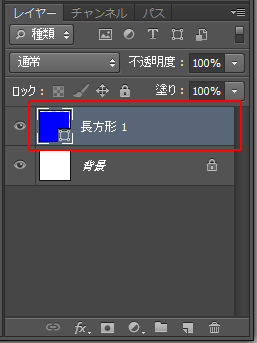

第3章 描画の練習
第4節 図形描画
本項では、図形を描画する[シェイプツール]の使用方法を学習します。
第1項 シェイプツールの使用
この項で学習する内容
- [シェイプツール]を使った図形の描画方法を習得する。
シェイプツールとは
長方形や楕円形、多角形などの図形描画ツールを
総称して[シェイプツール]と呼びます。
[シェイプツール]で図形を描画する際、3つのモードが切り替えられます。
まずはそのモードの違いを確認しましょう。
[ツールパネル]から[長方形ツール]を選択します。
[コントロールパネル]を確認すると、
「シェイプ」「パス」「ピクセル」の
3つのモードを切り替えるプルダウンメニューがあります。
- シェイプ
ベクトルデータで図形を描画することができ、
図形描画後も形状や塗り色を自由に変更することができます。
また、描画後に自動的にシェイプレイヤーが作成されます。
※レイヤーについては第5章で学習します。 - パス
図形のアウトライン（輪郭）の情報だけを持つベクトルデータを描画できます。
パスそのものは実体をもたないデータであるため、印刷などの出力には用いられませんが、
主に選択範囲を作成する際に利用されます。
※パスを使った選択範囲作成は第4章で学習します。 - ピクセル
単純に塗りつぶされた図形を描画します。
シェイプとは異なり、描画後に形状や塗り色を直接編集できません。
シェイプを作成する
まずは新規ファイルを作成します。
プリセットから［Photoshop初期設定］を選択し
それ以外の設定は変更しません。
[ツールパネル]から[長方形ツール]を選択し、
コントロールパネルで「シェイプ」を選択します。
コントロールパネルの[塗り]はシェイプの塗り色が設定できます。
カラーボックスをクリックして[べた塗り]が選択されていることを確認し、
スウォッチよりRGBブルーを選択します。
ワンポイント
カラーボックス内では[べた塗り]以外に[塗りなし][グラデーション][パターン]を設定することが可能です。また[カラーピッカー]から任意の色を選択することもできます。
塗りの設定が完了したら、画像内をドラッグしてください。
自由な大きさで長方形が描画できます。
図形を描画した後、[レイヤーパネル]を確認すると、
「長方形１」という名称の[シェイプレイヤー]が自動的に作成されます。
※レイヤーパネルが表示されていない場合は、
メニューバーの[ウィンドウ]-[レイヤー]から表示できます。

シェイプツールには、
長方形、角丸長方形、楕円形、多角形、ライン、カスタムシェイプがあり、
ツールパネルを長押しして選択できます。
「カスタムシェイプ」は、[コントロールパネル]から
あらかじめ登録されているさまざまな図形を選択することができます。
ワンポイント
各種シェイプツールでの図形描画の方法は、Illustratorと同じで
ドラッグして図形を描くことができます。
また、【Shiftキー】を押しながらドラッグすることで縦横の比率を変えずに
描ける点もIllustratorと同じです。
描いた図形を変形する
シェイプレイヤーはIllustratorと同様に
アンカーポイントと呼ばれる点をパスと呼ばれる線で結ぶ
ベクトルデータとして描画されます。
このアンカーポイントとパスを編集することで、
図形を描画した後でも形状を変形させることができます。
[パスコンポーネント選択ツール]を長押しし、
[パス選択ツール]を選択します。
[パス選択ツール]で長方形の輪郭あたりをクリックすると、
長方形の四隅に白い四角の点が表示されます。
この点が「アンカーポイント」で、アンカーポイント間を結ぶ線が「パス」になります。
では、[パス選択ツール]で長方形の右下隅にある
アンカーポイントをドラッグしましょう。
アンカーポイントをドラッグすることで、
長方形の形状を変形できました。
このようにアンカーポイントの位置を編集することで、
描いた図形の形状を後から自由に変更することができます。
※ここで紹介しきれないアンカーポイントの編集方法は
第4章で改めて学習します。
図形の色を変更する
[シェイプレイヤー]として描いた図形は、
後から塗り色も変更することができます。
[レイヤーパネル]を確認すると、「長方形1」レイヤーに
図形を縮小したアイコンが表示されています。
これは[レイヤーサムネール]と呼ばれるもので、
ここをダブルクリックすると[カラーピッカー]が表示されます。

[カラーピッカー]で色を変更すると、
図形の塗り色も変更されます。

ワンポイント
[長方形ツール]などのシェイプツールを選択した状態であれば、[コントロールパネル]の[塗り]から色を変更することも可能です。
図形の色を変更する
CS6以降から、作成した図形に対してIllustratorのように
[線]の要素を設定することができるようになりました。
[コントロールパネル]の[ストローク]右横のカラーパネルをクリックし、
お好きな色を選択しましょう。
さらにカラーパネル右横の入力欄では線の太さを設定できます。
初期設定では3ptとなっていますが、自由に線の太さを設定してみてください。
[コントロールパネル]の[ストロークオプション]では
さらに線の種類を細かく設定することができます。
設定項目は下記の通りです。
①整列：線の位置をシェイプの内側、中央、外側に設定できます。
②線端：線の端の形状を設定できます。
③角：角の形状を設定できます。
[詳細オプション]をクリックすると、上記の設定以外に破線の設定も可能です。
自由に設定してみて、どのように変化するか確認してみましょう。
シェイプレイヤーを塗りつぶした領域に変換する
[シェイプレイヤー]として作成した図形は、
後から[塗りつぶした領域]に変換することができます。
[レイヤーパネル]の「長方形１」レイヤーを右クリックし、
表示されたメニューから[レイヤーをラスタライズ]を選択します。
[レイヤーをラスタライズ]を選択すると、
図形の見た目は変化がないですが、
[レイヤーパネル]上での表示が変化します。
これにより、アンカーポイントとパスを持ったベクトルデータが
ピクセルで描かれたビットマップデータに変換され、
形状の編集や塗り色の変更ができなくなります。
ワンポイント
ベクトルデータは描画後も形状が編集できたり、
塗り色が変更できるなどの利点を持っていますが、
ベクトルデータのままだと色調補正など一部使えない機能があります。
それら機能を使うためには「ラスタライズ」する必要があります。
一旦、ファイルは保存せずに閉じておいてください。
図形の大きさを数値を決めて入力・修正
CS6以降から図形の大きさを数値を決めて入力・修正できる機能が大幅に強化されています。
まず、最初に大きさを決めて図形を作成してみましょう。
新規ドキュメントを作成します。
※設定はプリセットから[Photoshop初期設定]を選択し、
[単位]を「pixel」に変更し、それ以外の設定は変更しません。
新規ドキュメントが開いたら、[ツールパネル]より[長方形ツール]を選択し、
画像内でクリックすると、[長方形を作成]ダイアログボックスが表示されます。

ここでシェイプの大きさを設定できます。
[幅]と[高さ]ともに200pxと入力し、[OK]をクリックします。
これで200px×200pxの正方形が作成できました。
次に、作成した長方形の大きさを修正しましょう。
[長方形ツール]を選択した状態で[コントロールパネル]を確認すると、
[W：]（幅）と[H：]（高さ）が入力できる欄がありますので、
[W：]を300pxに、[H：]を400pxに入力し直します。
これで幅300px、高さ400pxの大きさに変更されます。
この項のまとめ
- [シェイプツール]とは
- ・長方形や楕円形、多角形などの図形を描画するツールを総称して[シェイプツール]と呼ぶ。
・[シェイプツール]は描画時に、シェイプ・パス・ピクセルの3つのモードを[コントロールパネル]から選択できる。 - 図形の描画方法
- ・各種シェイプツールで画面上をドラッグすることで、図形を描くことができる。
・ツールでドラッグする際に【Shiftキー】を押しながらドラッグすることで、図形の縦横の比率を維持したまま描画できる。
・図形描画時にクリックして描き始めると、図形のサイズを数値入力で設定できる。 - 描いた図形を編集する
- ・[パス選択ツール]を使い、描いた図形が持つ「アンカーポイント」を編集して、図形を変形することができる。
・[レイヤーパネル]内の「レイヤーサムネール」をダブルクリックして[カラーピッカー]を呼び出し、図形の色を変更することができる。
・作成した図形の大きさを[コントロールパネル]で修正できる。
・作成した図形の線（ストローク）を[コントロールパネル]で設定できる。
・[レイヤーパネル]のシェイプレイヤーを右クリックして表示するメニューから[レイヤーをラスタライズ]を選択することで、ピクセル（塗りつぶした領域）に変換することができる。
以上でこの節の学習は終了です。
ファイルは閉じて次の節へ進んでください。